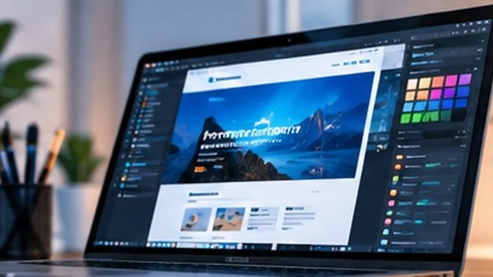

مقدمه؛ چرا طراحی سایت میتواند مسیر متفاوتی برای درآمد ارزی باشد؟
بسیاری از افراد وقتی درباره درآمد دلاری در ایران صحبت میکنند، به سراغ روشهایی مانند ترید، تولید محتوا در شبکههای اجتماعی یا فروش محصولات فیزیکی میروند. اما یک دارایی ارزشمندتر وجود دارد: توانایی حل مشکلات تجاری با استفاده از فناوری.
یک فروشگاه اینترنتی در آلمان، یک شرکت خدماتی در کانادا یا یک کسبوکار آموزشی در استرالیا، همگی ممکن است به وبسایتی نیاز داشته باشند که مشتری بیشتری جذب کند، اعتماد مخاطب را افزایش دهد و فرآیند فروش را سادهتر سازد.
در این میان، طراح سایت صرفاً کسی نیست که چند صفحه زیبا ایجاد میکند. او میتواند به شریک دیجیتال یک کسبوکار تبدیل شود؛ کسی که با ترکیب طراحی، تجربه کاربری و شناخت رفتار مشتری، به رشد یک برند کمک میکند.
چرا بازار جهانی میتواند فرصت مناسبی برای طراحان ایرانی باشد؟
در بازار داخلی معمولاً بسیاری از مشتریان خدمات طراحی سایت را بر اساس قیمت مقایسه میکنند. در بازار بینالمللی نیز رقابت قیمتی وجود دارد، اما امکان تمرکز بر ارزش تجاری پروژه، تخصص و کیفیت خدمات بیشتر میشود.
برای مثال، طراحی یک صفحه فرود برای یک شرکت نرمافزاری ممکن است از نظر ظاهری پروژه کوچکی باشد؛ اما اگر این صفحه بتواند نرخ تبدیل بازدیدکننده به مشتری را بهبود دهد، ارزش اقتصادی آن برای کارفرما بسیار بیشتر از تعداد ساعات صرفشده برای کدنویسی خواهد بود.
سه مزیت مهم این مدل درآمدی
فروش به بازار بزرگتر
محدود به شهر یا کشور محل زندگی خود نیستید و میتوانید مشتریان متناسب با تخصصتان را در بازارهای مختلف پیدا کنید.
فروش تخصص به جای حضور فیزیکی
بخش زیادی از فرآیند طراحی، توسعه، تحویل و پشتیبانی سایت میتواند به صورت غیرحضوری انجام شود.
امکان درآمد تکرارشونده
علاوه بر طراحی اولیه، خدمات نگهداری، بهینهسازی، توسعه و پشتیبانی میتوانند قراردادهای مستمر ایجاد کنند.
تبدیل مهارت به کسبوکار
در ادامه مسیر میتوانید به جای انجام انفرادی تمام پروژهها، یک تیم کوچک یا استودیوی طراحی وب بسازید.
برای کسب درآمد دلاری از طراحی سایت به چه مهارتهایی نیاز داریم؟

اشتباه رایج بسیاری از افراد این است که تصور میکنند تسلط به HTML و CSS به تنهایی برای ورود به بازار جهانی کافی است. این دو فناوری پایههای مهمی هستند، اما مشتری خارجی معمولاً یک خروجی کامل و قابل استفاده میخواهد.
۱. طراحی رابط کاربری و تجربه کاربری
باید بتوانید ساختار صفحات را بر اساس نیاز مخاطب طراحی کنید. انتخاب رنگ، تایپوگرافی، فاصلهگذاری و چیدمان باید در خدمت هدف سایت باشند. یادگیری Figma و اصول UX میتواند در این مسیر بسیار مفید باشد.
۲. توسعه فرانتاند
HTML، CSS و JavaScript پایههای اصلی توسعه فرانتاند هستند. تسلط بر طراحی واکنشگرا، دسترسپذیری، بهینهسازی عملکرد و ساخت تعاملات مناسب، کیفیت خروجی شما را افزایش میدهد.
۳. سیستمهای مدیریت محتوا
WordPress یکی از گزینههای کاربردی برای طراحی سایتهای شرکتی، وبلاگی و فروشگاهی است. یادگیری ساخت قالب، افزونهها، امنیت و مدیریت سایت میتواند دامنه خدمات شما را گسترش دهد.
۴. شناخت سئو و بازاریابی دیجیتال
مشتری به سایتی نیاز دارد که فقط زیبا نباشد؛ بلکه ساختار مناسبی برای دیدهشدن در موتورهای جستجو داشته باشد. شناخت SEO تکنیکال، ساختار محتوا و اصول تبدیل بازدیدکننده به مشتری یک مزیت رقابتی است.
۵. ارتباط حرفهای به زبان انگلیسی
لازم نیست در ابتدای کار انگلیسی کاملاً بدون نقصی داشته باشید؛ اما باید بتوانید نیاز مشتری را درک کنید، پیشنهاد قیمت بنویسید، درباره زمانبندی مذاکره کنید و گزارش پیشرفت پروژه را ارائه دهید.
انتخاب یک بازار تخصصی؛ راز فرار از رقابت فرسایشی
اگر در پروفایل خود بنویسید «طراح انواع سایت»، در واقع خودتان را در کنار هزاران طراح دیگر قرار دادهاید. اما اگر بگویید «طراحی سایت برای کلینیکهای دندانپزشکی» یا «طراحی صفحات فرود برای شرکتهای SaaS»، مخاطب دقیقتری پیدا خواهید کرد.
این همان مفهوم تخصصگرایی یا Niche Market است. تخصصیشدن باعث میشود زبان مشتری، مشکلات تجاری و نیازهای فنی یک صنعت را بهتر بشناسید.
شرکتهای نرمافزاری
طراحی صفحات معرفی محصول، صفحات قیمتگذاری، صفحات ثبتنام و لندینگپیج.
کسبوکارهای خدماتی
وبسایتهای شرکتی، معرفی خدمات، رزرو آنلاین و فرمهای دریافت مشتری.
فروشگاههای آنلاین
طراحی فروشگاه، بهینهسازی تجربه خرید و سادهسازی فرآیند پرداخت.
مدرسان و مشاوران
وبسایت شخصی، معرفی دوره، صفحه فروش و سیستم دریافت درخواست مشاوره.
نمونهکار بینالمللی بسازید؛ حتی اگر هنوز مشتری خارجی ندارید
برای ورود به بازار جهانی لزوماً نباید منتظر اولین کارفرمای خارجی بمانید. میتوانید سه پروژه فرضی اما کاملاً حرفهای طراحی کنید و آنها را به عنوان نمونهکار مفهومی معرفی نمایید.
پروژه اول: وبسایت یک شرکت فناوری
یک سایت انگلیسی با صفحه اصلی، معرفی محصول، ویژگیها، قیمتگذاری و صفحه تماس طراحی کنید.
پروژه دوم: وبسایت یک کسبوکار خدماتی
روی معرفی خدمات، اعتمادسازی، نظرات مشتریان و فرم درخواست مشاوره تمرکز کنید.
پروژه سوم: فروشگاه اینترنتی
صفحه محصول، سبد خرید، فیلتر محصولات و تجربه خرید موبایلی را به نمایش بگذارید.
برای هر نمونهکار یک توضیح انگلیسی بنویسید که در آن مسئله، راهحل طراحی و تصمیمات فنی را شرح داده باشید. اگر پروژه واقعی نیست، آن را صریحاً به عنوان Concept Project معرفی کنید و از نسبتدادن نتایج ساختگی به آن خودداری نمایید.
چگونه از ایران مشتری خارجی برای طراحی سایت پیدا کنیم؟
پیداکردن مشتری خارجی بیشتر از آنکه به شانس وابسته باشد، به ساخت یک سیستم بازاریابی شخصی نیاز دارد. باید در جایی حضور داشته باشید که مشتری بالقوه بتواند تخصص شما را ببیند و به کیفیت کارتان اعتماد کند.
مسیر اول: شبکههای حرفهای
در LinkedIn پروفایل خود را بر اساس تخصص مشخص کنید. به جای عبارت عمومی Web Designer از عنوانی مانند Landing Page Designer for SaaS Businesses استفاده کنید. سپس محتوای کوتاه درباره مشکلات طراحی و راهحلهای واقعی منتشر کنید.
مسیر دوم: ارتباط مستقیم با کسبوکارها
شرکتهایی را پیدا کنید که وبسایت آنها مشکلات مشخصی دارد؛ مثلاً طراحی نامناسب موبایل، سرعت پایین یا مسیر خرید پیچیده. یک پیام شخصیسازیشده بنویسید و به جای درخواست مستقیم پروژه، یک فرصت بهبود واقعی را توضیح دهید.
مسیر سوم: پلتفرمهای فریلنسری
پلتفرمهایی مانند Upwork و Fiverr و سایر بازارگاههای خدمات حرفهای میتوانند محل پیدا کردن پروژه باشند. با این حال، پیش از ثبتنام و فعالیت باید شرایط فعلی کشورها، محدودیتهای جغرافیایی، احراز هویت و قوانین استفاده از هر پلتفرم را بررسی کنید. از اطلاعات هویتی جعلی یا روشهای دور زدن محدودیتها استفاده نکنید.
مسیر چهارم: تولید محتوا به زبان انگلیسی
یک مقاله کوتاه درباره اشتباهات رایج طراحی سایت فروشگاهی یا یک ویدیوی تحلیل تجربه کاربری منتشر کنید. محتوای تخصصی میتواند به مرور شما را به عنوان فردی آگاه در یک حوزه مشخص معرفی کند.
چگونه اولین مشتری خارجی طراحی سایت را جذب کنیم؟ راهنمای عملی با نمونه پیام و پروپوزال
دانستن روشهای جذب مشتری کافی نیست. چیزی که یک طراح سایت را به اولین قرارداد بینالمللی نزدیک میکند، توانایی تبدیل دانش به ارتباط حرفهای است. فرض کنید یک شرکت کوچک در انگلستان وبسایتی دارد که در موبایل بهخوبی نمایش داده نمیشود و صفحات خدمات آن نیز ساختار مناسبی ندارند.
به جای ارسال یک پیام عمومی مانند «من طراح سایت هستم و میتوانم برای شما سایت طراحی کنم»، بهتر است دقیقاً به مشکلی اشاره کنید که در وبسایت آن کسبوکار مشاهده کردهاید.
نمونه اول: پیام انگلیسی برای ارتباط با مشتری خارجی
این نمونه برای شروع ارتباط با مدیر یک کسبوکار مناسب است. قبل از ارسال، قسمتهای داخل کروشه را با اطلاعات واقعی جایگزین کنید.
نمونه دوم: پیام حرفهای برای پیشنهاد طراحی مجدد سایت
اگر وبسایت مشتری قدیمی است یا طراحی مناسبی ندارد، میتوانید از یک پیام هدفمندتر استفاده کنید.
چگونه پیام را به یک قرارداد واقعی تبدیل کنیم؟
ارسال پیام تنها مرحله اول است. اگر مشتری پاسخ مثبت داد، باید بتوانید یک پیشنهاد حرفهای ارائه دهید. در این مرحله، از ارسال قیمت بدون شناخت نیاز مشتری خودداری کنید.
نمونه سوم: پروپوزال انگلیسی طراحی سایت
توجه: مبلغ ۷۵۰ دلار صرفاً یک مثال آموزشی است. قیمت واقعی باید پس از بررسی محدوده پروژه، امکانات، زمان موردنیاز و شرایط همکاری تعیین شود.
مطالعه موردی: چگونه یک طراح سایت میتواند یک پروژه خارجی را به فرصت درآمدی تبدیل کند؟
برای درک بهتر فرآیند، یک سناریوی فرضی را بررسی کنیم. این مطالعه موردی، نمونه آموزشی است و نباید به عنوان پروژه واقعی یا نتیجه اثباتشده معرفی شود.
سناریو: بازطراحی وبسایت یک شرکت خدماتی در کانادا
فرض کنید یک شرکت خدمات نظافت ساختمان در تورنتو وبسایتی قدیمی دارد. این سایت در موبایل ظاهر مناسبی ندارد، اطلاعات خدمات به شکل نامنظم نمایش داده میشوند و فرم درخواست قیمت نیز بهخوبی در دسترس نیست.
مرحله اول: شناسایی مشکلات
- طراحی نامناسب نسخه موبایل
- نبود دکمه مشخص برای درخواست قیمت
- ساختار نامناسب صفحات خدمات
- نبود بخش مناسب برای نمایش نظرات مشتریان
- مسیر پیچیده ارتباط با شرکت
مرحله دوم: ارائه راهحل
- طراحی رابط کاربری جدید و مدرن
- ساخت صفحه اختصاصی برای هر خدمت
- طراحی فرم درخواست مشاوره یا قیمت
- افزودن بخش اعتمادسازی و معرفی مشتریان
- بهینهسازی نمایش در موبایل و تبلت
مرحله سوم: تعریف ارزش مالی پروژه
در این سناریو، طراح به جای فروش چند صفحه اینترنتی، یک راهحل مشخص برای بهبود ارتباط شرکت با مشتریان ارائه کرده است. این تفاوت باعث میشود پیشنهاد او ارزش تجاری بیشتری داشته باشد.
مرحله چهارم: تبدیل پروژه به همکاری مستمر
پس از تحویل سایت، طراح میتواند خدماتی مانند بهروزرسانی، رفع خطا، نگهداری امنیتی، توسعه صفحات جدید و بهینهسازی تجربه کاربری را پیشنهاد دهد. در صورت توافق مشتری، این خدمات به قرارداد ماهانه تبدیل میشوند.
یک استراتژی ساده برای پیدا کردن ۱۰ مشتری بالقوه در هفته
به جای ارسال صدها پیام یکسان، هر هفته ۱۰ کسبوکار مرتبط با تخصص خود پیدا کنید و وبسایت آنها را بررسی کنید.
پیدا کردن کسبوکارها
شرکتهای کوچک و متوسط را در یک صنعت مشخص شناسایی کنید.
بررسی وبسایت
سه مشکل واقعی در تجربه کاربری، طراحی موبایل یا ساختار صفحات پیدا کنید.
ارسال پیام اختصاصی
برای هر کسبوکار یک پیام متناسب با نیاز همان شرکت بنویسید.
پیگیری حرفهای
اگر پاسخی دریافت نکردید، پس از چند روز یک پیام کوتاه و محترمانه ارسال کنید.
قیمتگذاری طراحی سایت برای مشتری خارجی چگونه انجام میشود؟
یکی از تفاوتهای مهم میان طراح مبتدی و طراح حرفهای، شیوه قیمتگذاری است. طراح مبتدی معمولاً میپرسد چند ساعت کار لازم است؟ اما طراح حرفهای ابتدا میپرسد پروژه چه ارزشی برای مشتری ایجاد میکند و چه محدودهای از خدمات باید ارائه شود؟
| نوع پروژه | بازه نمونه قیمت | مدل قیمتگذاری |
|---|---|---|
| صفحه فرود | ۱۵۰ تا ۵۰۰ دلار | پروژهای |
| وبسایت شرکتی | ۴۰۰ تا ۱۵۰۰ دلار | پروژهای |
| فروشگاه اینترنتی | ۷۰۰ تا ۳۰۰۰ دلار | پروژهای |
| پشتیبانی سایت | ۵۰ تا ۳۰۰ دلار | ماهانه |
این اعداد صرفاً نمونههای فرضی برای درک مدل قیمتگذاری هستند و نرخ قطعی بازار محسوب نمیشوند. مبلغ واقعی به کشور مشتری، پیچیدگی پروژه، سطح تخصص، امکانات، قرارداد و میزان رقابت بستگی دارد.
دریافت درآمد دلاری از داخل ایران؛ نکتهای که نباید نادیده گرفته شود
داشتن مشتری خارجی به معنای حلشدن خودکار مسئله دریافت پول نیست. محدودیتهای بانکی و تحریمها میتوانند دسترسی به برخی سرویسهای پرداخت و مالی بینالمللی را محدود کنند.
پیش از شروع همکاری، باید یک مسیر قانونی و قابل اتکا برای دریافت وجه پیدا کنید. این مسیر ممکن است بسته به وضعیت اقامت، محل ثبت کسبوکار، قوانین کشور مشتری و شرایط ارائهدهنده خدمات مالی متفاوت باشد.
اصول مهم برای مدیریت پرداخت
- پیش از عقد قرارداد، روش پرداخت و ارز تسویه را مشخص کنید.
- از امکان قانونی استفاده از سرویس مالی در محل اقامت و وضعیت خود اطمینان حاصل کنید.
- شرایط احراز هویت، کارمزد، محدودیت برداشت و تبدیل ارز را بررسی کنید.
- برای پروژههای بزرگ، پرداخت مرحلهای و قرارداد مکتوب داشته باشید.
- سوابق مالی و اسناد مربوط به درآمد و هزینه را نگهداری کنید.
- از حساب اجارهای، هویت جعلی و روشهای نقض شرایط سرویسها دوری کنید.
نکته مهم این است که قبل از پذیرش پروژه، امکان واقعی تسویه مالی را بررسی کنید؛ زیرا یک قرارداد سودآور بدون مسیر قانونی و قابل استفاده برای دریافت وجه، ممکن است به یک تعهد پرریسک تبدیل شود.
نقشه راه ۹۰ روزه برای رسیدن به اولین پروژه خارجی
برای جلوگیری از یادگیری پراکنده، بهتر است یک برنامه زمانبندی مشخص داشته باشید. برنامه زیر یک الگوی اجرایی پیشنهادی است و تضمین نمیکند که در روز نودم حتماً درآمد خواهید داشت.
روزهای ۱ تا ۱۵؛ ساخت زیرساخت مهارتی
تخصص خود را انتخاب کنید، مهارتهای ضروری را ارزیابی کنید و نقاط ضعف اصلی را برطرف نمایید.
روزهای ۱۶ تا ۳۰؛ ساخت هویت حرفهای
یک وبسایت شخصی انگلیسی بسازید، خدمات خود را معرفی کنید و حداقل دو نمونهکار باکیفیت آماده کنید.
روزهای ۳۱ تا ۴۵؛ تکمیل سبد نمونهکار
پروژه سوم را تکمیل کنید، توضیحات مطالعات موردی بنویسید و پیشنهادهای خدماتی خود را آماده کنید.
روزهای ۴۶ تا ۶۰؛ شروع بازاریابی
فهرستی از کسبوکارهای هدف تهیه کنید، پروفایلهای حرفهای را تکمیل کنید و ارتباطات شخصیسازیشده برقرار نمایید.
روزهای ۶۱ تا ۷۵؛ مذاکره و پیشنهاد قیمت
نیاز مشتریان بالقوه را بررسی کنید، پیشنهادهای اختصاصی بنویسید و درباره محدوده کار و زمان تحویل مذاکره کنید.
روزهای ۷۶ تا ۹۰؛ اجرای پروژه و بهبود سیستم
در صورت دریافت پروژه، آن را حرفهای تحویل دهید، بازخورد بگیرید و فرآیند جذب مشتری را بهبود دهید.
ماشینحساب درآمد دلاری طراحی سایت
برای درک بهتر ظرفیت اقتصادی این حرفه، میتوانید تعداد پروژهها و میانگین قیمت هر پروژه را وارد کنید. این ابزار یک محاسبه ساده است و درآمد خالص، مالیات، کارمزد، هزینهها و نوسانات ارز را محاسبه نمیکند.
درآمد ناخالص تخمینی ماهانه:
$1,100۷ اشتباه که میتواند مسیر درآمد دلاری شما را متوقف کند
۱. یادگیری بدون اجرا
دیدن دورههای آموزشی بدون ساخت نمونهکار واقعی، مهارت قابل فروش ایجاد نمیکند.
۲. رقابت صرفاً بر اساس قیمت
قیمت پایین به تنهایی مزیت رقابتی پایدار نیست. ارزش خدمات خود را نشان دهید.
۳. نداشتن تخصص مشخص
ارائه خدمات به همه بازارها باعث میشود پیام بازاریابی شما مبهم شود.
۴. ارتباط ضعیف با مشتری
تأخیر در پاسخگویی و توضیحات مبهم میتواند اعتماد مشتری را از بین ببرد.
۵. بیتوجهی به قرارداد
محدوده پروژه، تعداد اصلاحات، زمان تحویل و شرایط پرداخت باید شفاف باشند.
۶. نادیده گرفتن نگهداری
پایان طراحی سایت نباید به معنای پایان رابطه حرفهای با مشتری باشد.
۷. بیتوجهی به محدودیتهای پرداخت
قبل از قبول پروژه باید مسیر دریافت قانونی پول مشخص شده باشد.
سؤالات متداول درباره درآمد دلاری از طراحی سایت در ایران
جمعبندی؛ مهارت شما زمانی ارزشمند میشود که به یک راهحل تجاری تبدیل شود
درآمد دلاری از طراحی سایت در ایران صرفاً نتیجه یادگیری چند زبان برنامهنویسی نیست. این مسیر از ترکیب مهارت فنی، شناخت بازار، تخصصگرایی، ارتباط مؤثر و مدیریت حرفهای پروژه شکل میگیرد.
اگر بتوانید به یک کسبوکار خارجی نشان دهید که چگونه یک وبسایت بهتر میتواند تجربه مشتریانش را بهبود دهد، فرآیند فروش را سادهتر کند یا اعتبار برندش را افزایش دهد، دیگر صرفاً یک طراح صفحات وب نیستید؛ شما ارائهدهنده یک راهحل تجاری هستید.